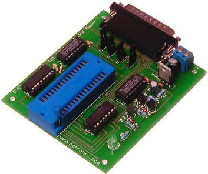
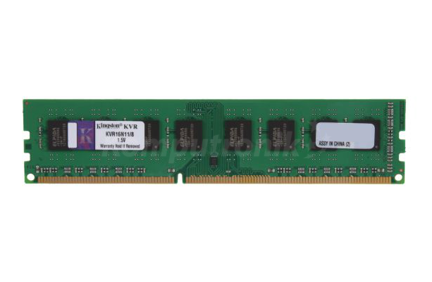

a)Pamiêæ wewnêtrzna
*Pamiêæ ROM

Pamiêæ tylko do odczytu, ROM (od ang. read-only memory) – pamiêæ pó³przewodnikowa urz¹dzenia elektronicznego, w szczególnoœci komputera, z której dane mo¿na tylko odczytywaæ, natomiast zapis jest niemo¿liwy albo mo¿e wymagaæ dodatkowych czynnoœci lub sprzêtu (na przyk³ad programatora).
"https://pl.wikipedia.org/wiki/Pami%C4%99%C4%87_tylko_do_odczytu"
*Pamiêæ RAM
RAM (od ang. random-access memory), pamiêæ o dostêpie swobodnym – podstawowy rodzaj pamiêci cyfrowej. Choæ nazwa sugeruje, ¿e jest to ka¿da pamiêæ o bezpoœrednim dostêpie do dowolnej komórki pamiêci (w przeciwieñstwie do pamiêci o dostêpie sekwencyjnym, na przyk³ad rejestrów przesuwnych), ze wzglêdów historycznych oznacza ona tylko te rodzaje pamiêci o bezpoœrednim dostêpie, w których mo¿liwy jest wielokrotny i ³atwy zapis, a wyklucza pamiêci ROM (tylko do odczytu) i EEPROM, w których zapis trwa znacznie d³u¿ej ni¿ odczyt, mimo ¿e w ich przypadku te¿ wystêpuje swobodny dostêp do zawartoœci[1]."https://pl.wikipedia.org/wiki/RAM"

-
Producent--Kingston
Gwarancja--Gwarancja do¿ywotnia
rodzaj pamiêci--DDR3 DIMM
standard--DDR3-1600 (PC3-12800)
pojemnoœæ pojedynczego modu³u--8 GB
przepustowoϾ--12800 MB/s
czêstotliwoœæ pracy--1600 MHz
opóŸnienie - cycle latency--11
timingi-- 11-11-11
b)Pamiêæ zewnêtrzna
*Dysk twardy

Dysk twardy, napêd dysku twardego, HDD (z ang. hard disk drive) – pamiêæ masowa wykorzystuj¹ca noœnik magnetyczny do przechowywania danych. Nazwa „dysk twardy” wynika z zastosowania twardego materia³u jako pod³o¿a dla w³aœciwego noœnika, w odró¿nieniu od dysku miêkkiego, w którym noœnik magnetyczny nanoszono na pod³o¿e elastyczne
"https://pl.wikipedia.org/wiki/Dysk_twardy"
Producent--Hitachi
Gwarancja--3 lata w serwisie zewnêtrznym
format szerokoœci--3.5 cala
pojemnoϾ--6000 GB
interfejs--Serial ATA III
pamiêæ cache--128 MB
prêdkoœæ obrotowa--7200 obr./min.
niezawodnoϾ MTBF--1000000 godz.
wysokoϾ--146 mm
d³ugoœæ--26.1 mm
waga--840 g

 CD-Audio, Audio-CD, CD-DA (ang. Compact Disc Digital Audio) – standard cyfrowego zapisu dŸwiêku na p³ycie kompaktowej, wykorzystuj¹cy do tego celu kodowanie PCM o czêstotliwoœci próbkowania 44,1 kHz i rozdzielczoœci 16 bitów na próbkê.
CD-Audio, Audio-CD, CD-DA (ang. Compact Disc Digital Audio) – standard cyfrowego zapisu dŸwiêku na p³ycie kompaktowej, wykorzystuj¹cy do tego celu kodowanie PCM o czêstotliwoœci próbkowania 44,1 kHz i rozdzielczoœci 16 bitów na próbkê.
 CD-RW (ang. Compact Disc – ReWritable) – p³yta kompaktowa z mo¿liwoœci¹ wielokrotnego nagrywania (ok. 1000 razy) za pomoc¹ odpowiedniej nagrywarki komputerowej.
Noœniki CD-RW diametralnie ró¿ni¹ siê budow¹ i zasad¹ dzia³ania od p³yt CD-R. P³yta miêdzy dyskiem z tworzywa sztucznego a odbijaj¹c¹ œwiat³o warstw¹ aluminium ma warstwê bêd¹c¹ stopem czterech metali (srebro, ind, antymon, tellur). Warstwa ta dysponuje specjalnymi w³asnoœciami fizycznymi. Promieñ lasera mo¿e czyniæ j¹ przezroczyst¹ lub poch³aniaj¹c¹ œwiat³o. Dziêki temu, ¿e warstwa ta mo¿e przechodziæ dowolnie z jednego stanu w drugi, zapis na CD-RW nazywany jest zapisem zmiennofazowym (jest on w pe³ni odwracalny – p³ytê mo¿na „wyczyœciæ”).
CD-RW (ang. Compact Disc – ReWritable) – p³yta kompaktowa z mo¿liwoœci¹ wielokrotnego nagrywania (ok. 1000 razy) za pomoc¹ odpowiedniej nagrywarki komputerowej.
Noœniki CD-RW diametralnie ró¿ni¹ siê budow¹ i zasad¹ dzia³ania od p³yt CD-R. P³yta miêdzy dyskiem z tworzywa sztucznego a odbijaj¹c¹ œwiat³o warstw¹ aluminium ma warstwê bêd¹c¹ stopem czterech metali (srebro, ind, antymon, tellur). Warstwa ta dysponuje specjalnymi w³asnoœciami fizycznymi. Promieñ lasera mo¿e czyniæ j¹ przezroczyst¹ lub poch³aniaj¹c¹ œwiat³o. Dziêki temu, ¿e warstwa ta mo¿e przechodziæ dowolnie z jednego stanu w drugi, zapis na CD-RW nazywany jest zapisem zmiennofazowym (jest on w pe³ni odwracalny – p³ytê mo¿na „wyczyœciæ”).